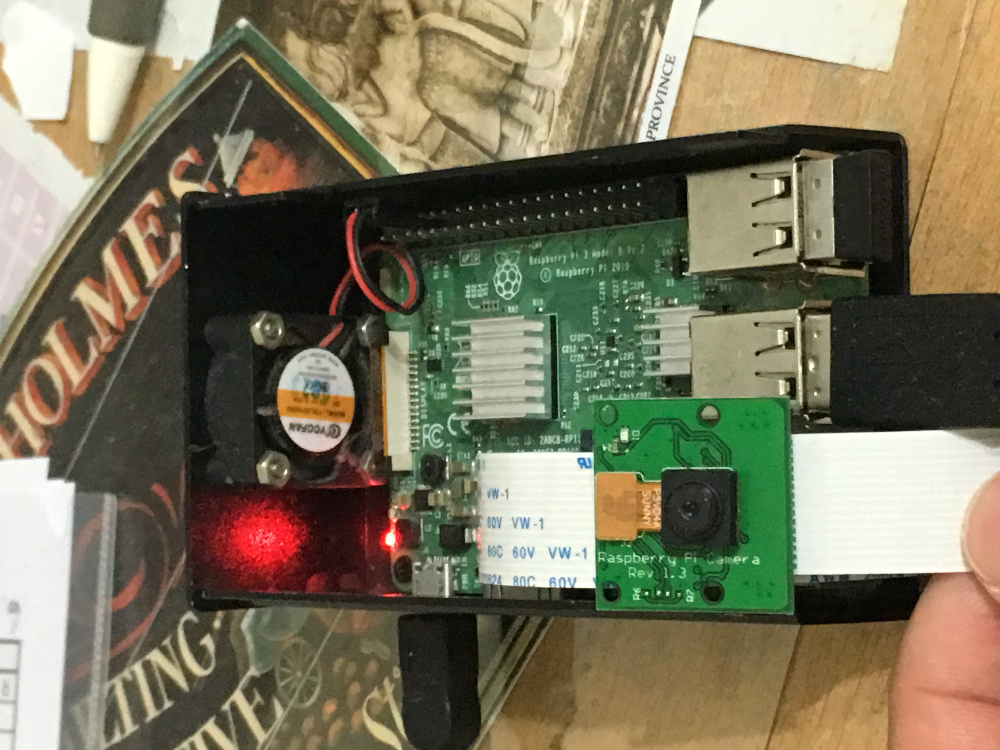
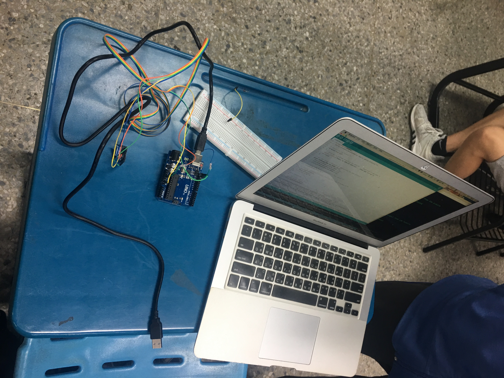
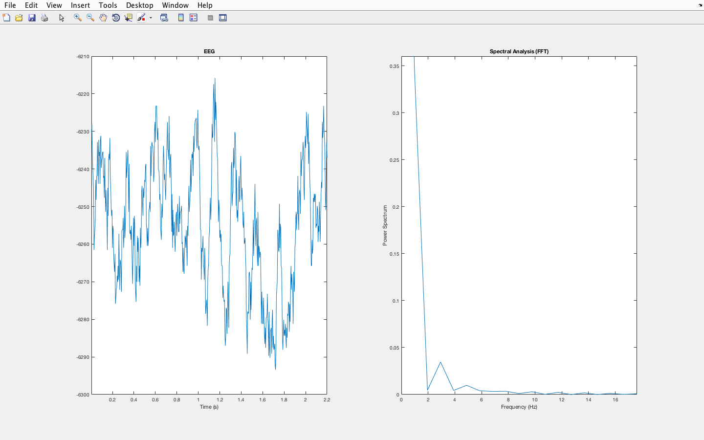
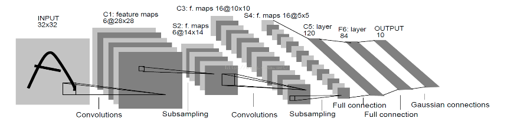

♦動機：大學時期，上課接觸了樹莓派。因緣際會下，想要將他改裝成屬於自己的監視器。於是上網查了如何使用Linux系統，如何架Apache2，最後成功在家裡架了一台能夠遠距控制的電腦。
♦心得：做什麼都不難，踏出第一步才是最難的。縱然我已經玩超過五塊開發版(Rpi, Arduino, Webduino Fly, Webduino smart, Linkit7697)，但也慶幸那時候有樹莓派當基礎，對於其他開發板能更快上手，也讓我豁然開朗-只要功夫深，鐵杵磨成繡花針、只要基礎牢靠，很多相關事情可以觸類旁通。
師傅引進門，修行在個人
Arduino ADXL345 三軸加速規

♦動機：機電系課程選修，智慧機械整合技術課程所要求做的專題。本組採用arduino adxl345是看準他的cp值優異，低耗工且可以測三軸的加速度。從最基礎的做起，工母跳線自己連接、自行上網查詢硬體如何連接、自己看Arduino官方軟體編寫，最後成功測得震動源的三軸加速度。
♦心得：我覺得這個三軸加速規應用很廣泛。比方說，電風扇有疲勞壽命，就可以善用這個加速規感測器提早通知使用者，何時電風扇會故障。實際方法的構想是提取感測器資料後，利用快速傅立葉分析將其轉換成時頻圖，找出風扇最大疲勞極限，在發生危難時，透過訊息警告使用者。

♦動機：大一找到專題老師。我負責做腦波訊號處理，處理內容包括腦波訊號的資料類型整理、濾波器的設計、還有大腦關聯性的分析(Brain-Connectivity-Analysis)。目標是透過腦波分析，彙整植物人的腦波資訊，輔以機器手臂，讓患者能夠心想、機械手臂致動，解決生活上的困難。
♦心得：我覺得這個專題十足有趣。這也是我第一次這麼認真研究Matlab，才發現Matlab除了處理數學運算很厲害之外、還有許多 ToolBox，比方說腦波處理(eeglab)可以呼叫使用。不過我更傾向自己寫code，畢竟使用上更個人化也比較熟悉。總之，這個專題奠定了我對數值分析的熱愛。
d

♦動機：這是我目前正在做的專題，透過機器學習來做手寫辨識。目前使用Python來做CNN分析，現在搞懂了卷積層、池化層，現在正往如何建構神經網路邁進。 Deep Learning 也是我的發展方向，透過多層網路來使資料預測值更精準。
♦心得：機器學習一直都是我非常嚮往的學科。看到Google的AlphaGo打敗韓國圍棋國手後，更是燃起了我對機器學習的期待。我正思索著如何將人工智慧與腦波訊號處理結合，讓電腦有辦法讀到腦波後判斷擁有者的當下動作，之後應用的層用更加廣泛。